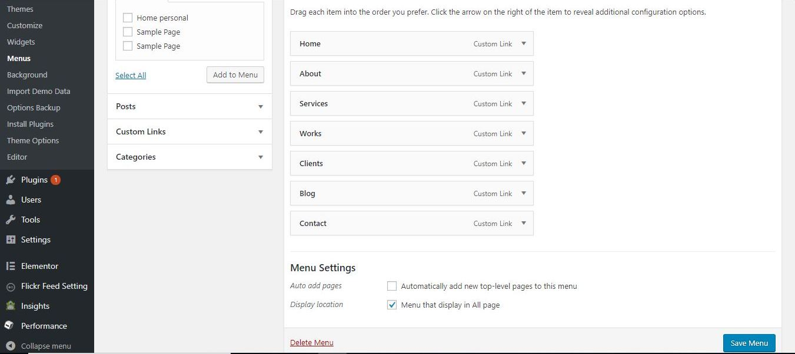
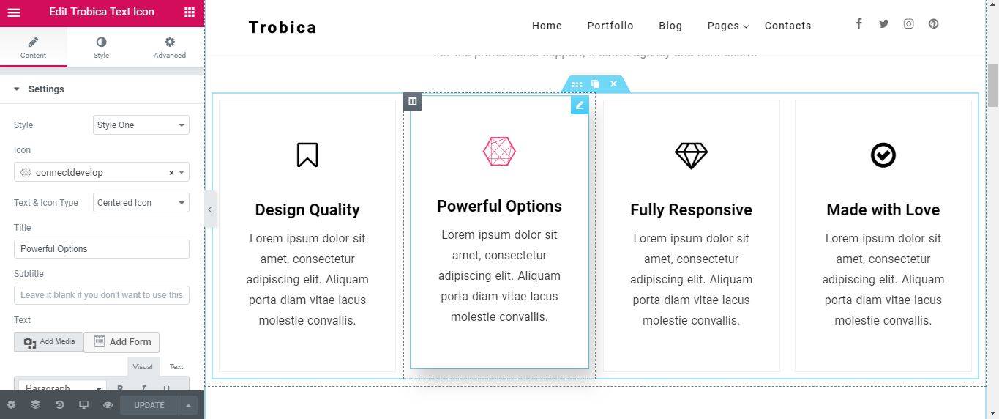
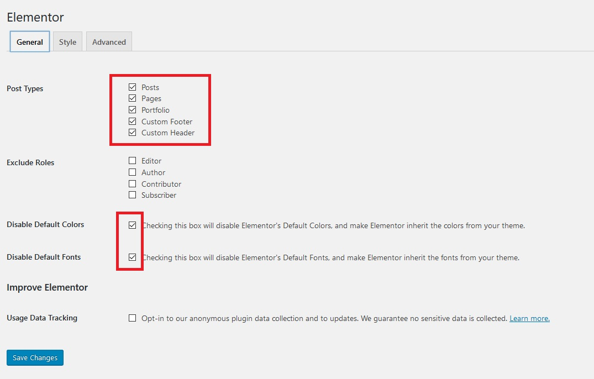

This document covers the installation, set up, and use of this theme, and provides answers and solutions to common problems. We encourage you to first read this document thoroughly if you are experiencing any difficulties before contacting our support team.
trobica
trobica theme has many more customization options including typographic selectors, stylistic color pickers and other add-ons. And in addition to these fantastic features, you'll also receive dashboard one-click updates and access to world-class theme support by our team of in-house professional WordPress developers.
WordPress Upload
To upload through your Dashboard, select “Appearance” and then “Themes”. Next, select the “Install Themes” tab at the top of the page and then select the “Upload” link, right above the search field. Choose your file and select “Install Now”. Once the theme is fully uploaded and installed, click “Activate” to activate the WordPress theme.
The theme files will be stored on your server in the wp-content/themes location.
When uploading your theme with the installer, please ensure you are uploading the theme .zip file, not the entire package you downloaded. In this case, you will be uploading trobica.zip.
FTP Upload
To manually upload your new WordPress theme, login with your credentials to your website and locate the wp-content folder in your WordPress install files. Upload the un-zipped trobica folder into the: wp-content/themes folder.
Once uploaded, activate the theme by heading to the “Themes” menu in the WordPress Dashboard. Locate the trobica theme and hit “Activate”.
Premium Theme Setup
If you're looking for WordPress theme installation and setup to look exactly like the live theme demo - then we're here to help. Fast & simple for only $49.
Our in-house team of professional developers will install the theme, upload the demo XML file, and setup your website exactly like the live demo. Frustration free. Complete your purchase of the Theme Setup service and send us your deliverables.
Deliverables:
- Domain name
- FTP information
- WordPress admin credentials
- Theme files or ThemeForest item purchase code
Theme Support
If you have a problem with the theme or found a bug, please let us know via our official Help Center. We take pride in our customer support and we will do what we can to assist you. If you are experiencing a theme issue, please first turn off all third party plugins to see if the problem persists.
Please note that support is only offered for trobica theme. If you already have a Pro license and have any questions that are beyond the scope of this document, feel free to ask us via our dedicated help center.
It is rather important to set your theme menu in the WordPress Dashboard. To do this, locate the Menu options by selecting the “Appearance” tab from the dashboard sidebar and then “Menus”.
Once you’re viewing the Menus, create a new menu and save it. After you’ve saved the menu, you can add it to a menu via the Menu Settings, below the Menu Structure area. Add your pages and links to the menu you just created in the Menu Structure area.

Plugin install
To install any of our free plugins, head over to our website and simply download the plugin files. Once you’ve successfully downloaded a zip file, head to your WordPress Dashboard and select “Plugins > Add New > Upload.”
Add the zipped file in the field there and click “Upload.” Upon a successful upload, you’ll be prompted to activate the plugin.
Required Plugins
The follwing free plugins required to be installed and activated prior import the demo content as upcoming
Located inside the /demo content folder within the package contents, you'll find a costomize.dat, content.xml and widget.wie files. This file contains the live demo's data, widgets and costomization.
To import, first install and activate the One Click Demo Import WordPress plugin, which is available as a free download. After you're successfully running the plugin, head to Appearance >> Import Demo Data section.

Find out more on installing and activating plugins.
The customization panel allaw the live customization of header, footer logo, social media links, color, widgets, menu and other more options.

This theme is powered by Elementor Builder So you can easily creating page with page builder powered by this plugin.
You can visit this page for more detail explanation for using this page builder plugin.

Elementor setting #1

If you've requested and entered your theme license key, then you'll automatically be notified of any theme updates as we push them. This is the most effective method for getting updates pushed to you quickly and effienctly.
Check for Updates
To check your theme version, click the live changelog link below and check the version number at the top of the changelog.txt file:
Relay the changelog version at the top of that changelog.txt file with the version in your WordPress Dashboard > Appearance > Themes section to see if your theme files are up to date.
If you are in need of the update, download the current build from the location you purchased the theme from ThemeForest to install the updated theme.
If you have an active license key applied to your theme, you will receive live update notifications to which allows one-click updates directly from your WordPress dashboard.
FTP Updating
If you have not customized the original theme files then you may simply drop the updated theme folder contents into the theme folder on your server – which is located in wp-content/themes/trobica.
If you wish to upload the entire updated theme as a separate theme, ensure you:
- Rename the updated theme’s folder (different from the current theme)
- Drop the renamed theme folder into wp-content/themes
- Switch to the new theme via your WordPress Dashboard
If you choose to upload the whole theme and switch to it, you may lose your Theme Customizer data and will have to add those back in.
FTP Selective Updating
On the other hand, if you have customized some files in the core theme contents, you should consider selective updating, which simply means updating only the files that are pointed out in the theme’s changelog.
There are a couple programs out there that will allow you to compare versions of files, in order to catch customizations you may not remember. Some recommended programs are WinMerge (Windows), Kaleidoscope (OSX), and handy GitHub (OSX) & (Windows).
Recommended
Overall, the safest and cleanest way to update your theme is to leave your currently modified theme on your server/site as is, rename the folder of the newly updated theme, upload the new theme, and modify that to match your original custom work. In this way, if something has gone wrong with the new version, you’re just a few clicks away from getting things back to how they originally were.
Once you've located your license key on your purchase receipt, you may enter the key on the "Theme License" dashboard widget, located on your WP Dashboard.
Once your license key is entered, hit the "Save License" button - then the "Activate" button that appears after the page refreshes. Upon a successful activation you’ll see a green “Active” tag next to the widget title.
Please note that licenses are only given for trobica - not the free version.

What is the license key for?
It is important to keep your license up to date in order to continue getting updates for your WordPress theme and support for any issues you may encounter. Renewing your license grants you access to support and updates for six months, including all updates for bug fixes and feature introductions.
Without a valid theme license, you will be unable to get support and receive theme updates.
If your key is not applied after hitting the Activate button, simply re-enter the key and try again. Sometimes it takes a few tries to properly establish a connection with the activation server.
What if my license key has expired?
License keys may be renewed at a discount on our website. You will get a renewal notification in the license key dashboard widget if your license is about to expire, or has indeed expired.
A child theme is a theme that inherits the functionality and styling of another theme, called the parent theme. Child themes are the recommended way of modifying an existing theme.
Why use a Child Theme?
There are one main reason why you would want to use a child theme: If you modify a theme directly and it is updated, then your modifications WILL be lost. By using a child theme you will ensure that your modifications are preserved.
Installing the Child theme
Log in to your site's administration panel, and go to Administration Panels > Appearance > Themes. Click "Add New" and follow the directions to upload the trobica-child.zip file, located in the trobica-package/theme/ folder.
Next simply click "Activate" and both the trobica theme and trobica child theme will be active on your WordPress site. Now you're ready to customize away.
Note that this is the same exact method we referred to in the Getting Started section of this guide. You should see your child theme listed and ready for activation.
Customizing Template Files
If you want to change more than just the stylesheet, your child theme can override any file in the parent theme: simply include a file of the same name in the child theme directory, and it will override the equivalent file in the parent theme directory when your site loads.
For instance, if you want to change the PHP code for the site header, you can include a header.php in your child theme's directory, and that file will be used instead of the parent theme's header.php.
Child Theme Functions.php
Unlike style.css, the functions.php of a child theme does not override its counterpart from the parent. Instead, it is loaded in addition to the parent’s functions.php. (Specifically, it is loaded right before the parent’s file.)
In that way, the functions.php of a child theme provides a smart, trouble-free method of modifying the functionality of a parent theme.
Adding PHP Functions
Say that you want to add a PHP function to your theme. The fastest way would be to open the trobica /functions.php file and put the function there... But that’s not smart: The next time trobica is updated, your function will disappear (as the entire contents of the /trobica/ folder are replaced upon an update.
However, there is an alternative way which is the smart way: you can create a child theme, add a functions.php file in it, and add your function to that file. The function will do the exact same job from there too, with the advantage that it will not be affected by future updates of the parent theme.
DO NOT copy the full content of functions.php of the parent theme into functions.php in the child theme. It's not a good practice by any means.